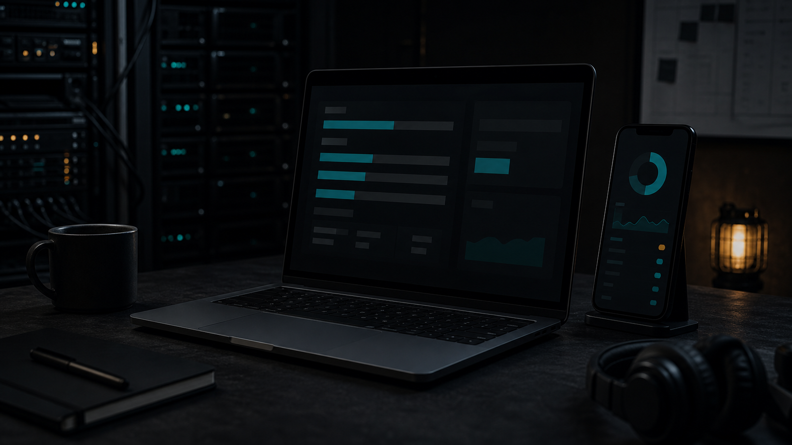

Private by default
Credentials stay on the host. The browser receives quota, reset, and freshness data.
Private quota monitoring
One command installs a private dashboard for CodexBar, Tailscale, and your phone.
Open source / local-first / tailnet-only

Built for the machine you already own
Quota Deck reads the providers on your computer and sends only a normalized view through your private tailnet.
Credentials stay on the host. The browser receives quota, reset, and freshness data.
The wizard detects your OS, asks before installing prerequisites, and prints a phone-ready URL.
No public router port. No Tailscale Funnel. No hosted copy of your provider credentials.
Start with the command
Install Node 22+, run the wizard, then follow the provider and Tailscale login screens it opens.
npx quota-deck@latest setup
No clone. No config file. No Docker.
A small, explicit boundary
Quota Deck is a local gateway with a private network route. It is not a cloud dashboard.
The Windows path is validated on a homelab. Wider hardware coverage remains beta.
Ready when you are
Install it, inspect it, and make it yours.